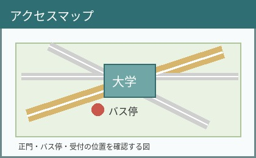
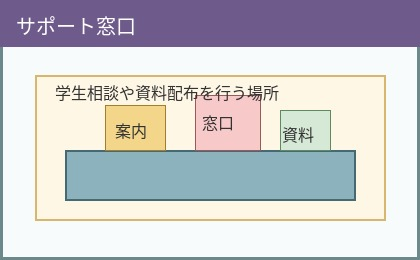

アクセス確認

正門から入ったら、最初に案内掲示を確認します。バス停や駐輪場から来る場合も、受付の場所を先に確認しておくと安心です。
画像は右側に回り込ませています。本文が画像の横に配置される様子を確認してください。
来校の流れ
1. 正門
大学の入口で案内表示を確認します。
2. 受付
必要な手続きや資料の受け取りを行います。
3. 教室
案内に従って、目的の教室や施設へ移動します。
サポート窓口

分からないことがある場合は、近くの窓口で確認します。授業、施設、証明書など、内容によって相談先が変わることがあります。
確認メモ
この欄は高さを指定し、内容が多い場合にスクロールして読めるようにしています。overflowプロパティの働きを確認してください。受付時間、持ち物、集合場所、連絡先、当日の注意点などをここにまとめることができます。